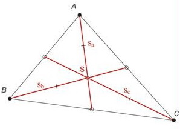
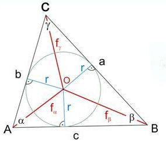

Háromszögek nevezetes vonalai és pontjai
-
Magasságvonal
- A háromszög egyik csúcsából a vele szemközti oldalra szerkesztett merőleges a háromszög magasságvonala. A magasságvonal csúcs és oldal közé eső szakasza a háromszög magassága.
- A három magasságvonal egy pontban metszi egymást, ez a háromszög magasságpontja (M).
- Hegyesszögű háromszög esetében a magasságpont a háromszög belsejében van, tompaszögű háromszög esetében a háromszögön kívül, míg derékszögű háromszög esetében a derékszögű csúccsal egybeesik.
-

-
Súlyvonal
- A háromszög egyik csúcsát a szemközti oldal felezőpontjával összekötő egyenes a háromszög súlyvonala.
- A súlyvonalak a háromszög súlypontjában (S) metszik egymást. A súlypont a súlyvonalat 2:1 arányban osztja.
- 
-
Szögfelezők
- A háromszög szögfelezője az az egyenes, amely valamely belső szögét felezi.
- A három szögfelező egy pontban metszik egymást, ez a pont a háromszögbe írható kör középpontja.
- Mindig a háromszögön belül van. A kör sugara a középpont és valamely oldal távolsága.
- 
-
Oldalfelező merőlegesek
- A háromszög oldalfelező merőlegesei egy ponton metszik egymást, ez a pont a háromszög köré írható kör középpontja.
- A kör sugara a középpont és valamely csúcs távolsága.
- Hegyesszögű háromszög esetében a középpont a háromszög belsejében van, tompaszögű háromszög esetében a háromszögön kívül, míg derékszögű háromszög esetében az átfogó felezési pontja.
-

-
Középvonal
- A háromszög bármely két oldalának felezési pontját összekötő szakasz.
- A középvonal párhuzamos a harmadik oldallal, és fele akkora.
- A 3 középvonal 4 egybevágó háromszögre bontja az eredeti háromszöget
-